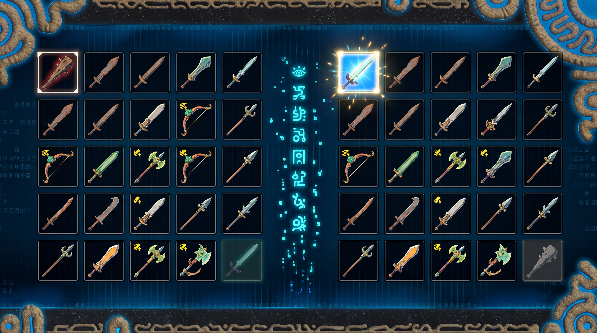
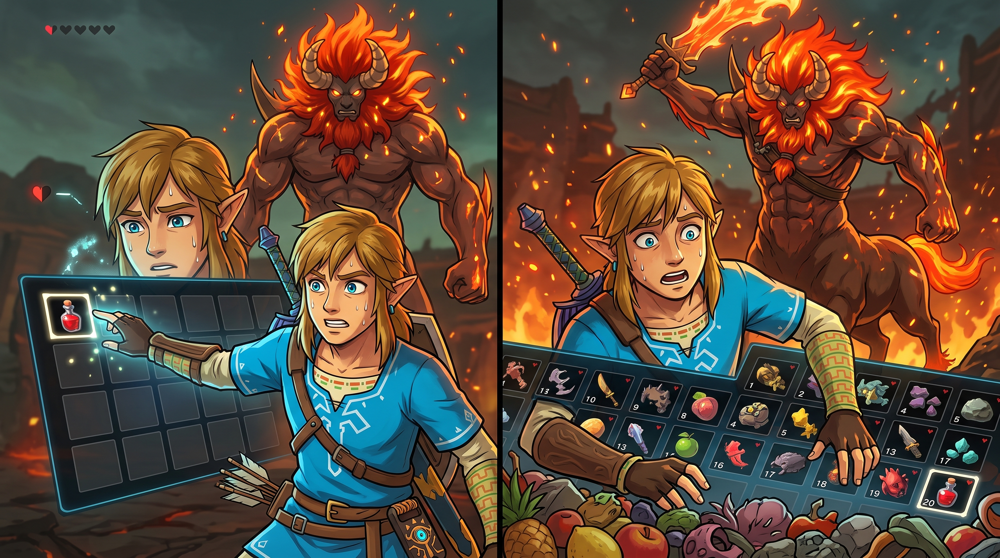

Fase 02 · KPI: MRR
Cross-Encoder · Eliminando el efecto "Lost in the Middle"
Cuando la base de datos devuelve los 20 mejores documentos (el Top K), estos vienen ordenados por la puntuación del buscador, hecha con modelos rápidos y poco precisos (Bi-encoders) por cuestiones de rendimiento. Tener el documento correcto en la posición 18 de 20 es casi tan malo como no tenerlo: el LLM lo ignorará.
Los modelos de lenguaje grandes tienen un sesgo posicional conocido como "recency bias" y "primacy bias": prestan más atención al inicio y al final del contexto proporcionado. Los documentos en las posiciones intermedias de un contexto largo reciben, estadísticamente, menos peso en el mecanismo de atención del transformer. El Reranking resuelve esto asegurando que los documentos más relevantes siempre estén en las primeras posiciones, donde el LLM los procesa con mayor fidelidad.
Codifica la consulta y el documento de forma separada e independiente. Genera un vector para la consulta y vectores pre-calculados para los documentos, luego calcula la similitud con una simple operación de producto escalar o coseno.
Recibe la consulta y el documento juntos como una sola entrada concatenada. El modelo procesa ambos textos simultáneamente, permitiendo una interacción profunda entre cada token de la consulta y cada token del documento.
El Reranking introduce un modelo especializado (Cross-encoder) que actúa como un juez minucioso. No busca en la base de datos; simplemente toma esos 20 documentos y la pregunta del usuario, y los evalúa cruzadamente, recalculando su relevancia exacta. El resultado: reordena la lista, poniendo los 3 o 4 documentos más perfectos hasta arriba. El LLM entonces solo necesita leer esos pocos documentos de alta calidad, evitando el ruido y el efecto "Lost in the Middle".

Tras derrotar a un campamento de Bokoblins, Link recoge un montón de armas del suelo a toda prisa. Su alforja está llena y desordenada. En el fondo de la bolsa quedó la Espada Maestra, y arriba tiene un garrote de madera a punto de romperse. El Reranking es presionar el botón de "Auto-ordenar Inventario". El sistema pausa un segundo, evalúa el poder y durabilidad de todo lo que recogió, y pone las mejores armas en las primeras casillas de acceso rápido, enviando la basura al fondo para que Link no la use por error en la batalla.
Evalúa en qué posición quedó el primer documento relevante. Se calcula con el inverso de la posición:
Un MRR bajo significa que el LLM se perderá leyendo basura antes de llegar a la respuesta correcta. El Reranking transforma un Hit Rate alto (el documento correcto existe en el Top 20) en un MRR alto (el documento correcto está en posición 1 o 2). Sin Reranking, puedes tener un Hit Rate del 95% pero un MRR de 0.15, tienes los documentos pero en el orden equivocado.

Link tiene medio corazón de vida y un Centaleón le ataca. Abre el menú para curarse. El MRR mide qué tan rápido encuentra la poción. Si la poción roja está en la ranura 1 (MRR = 1.0), se cura al instante. Si está en la ranura 20 (MRR = 0.05), pierde 10 segundos scrolleando y el monstruo lo elimina. El Reranking pone la poción en la ranura 1: asegura que lo más importante esté siempre a mano, en el momento crítico.